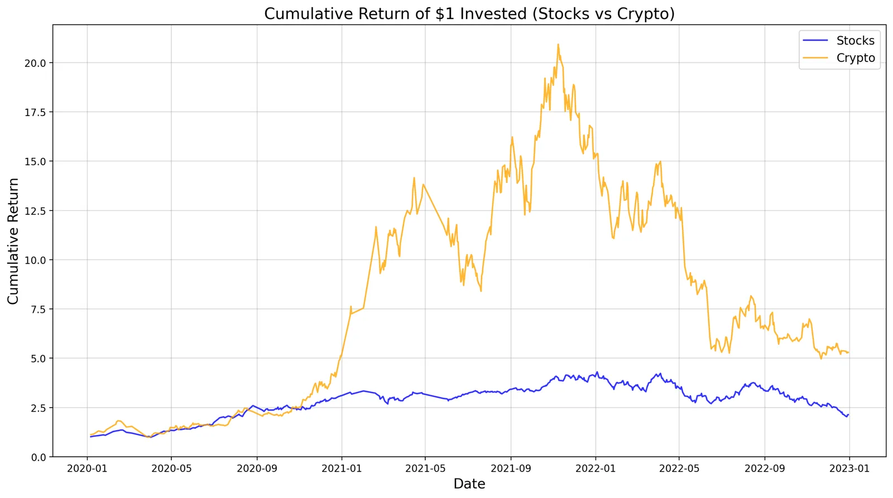

Modelling systems and markets in Python
Two-part Python project: an object-oriented simulation of a fish hatchery's quarterly operations, and an exploratory analysis comparing how stocks and cryptocurrencies behaved from 2020 to 2023.
- Context
- MSc Data Science, University of Bristol (Software Development: Programming and Algorithms)
- Stack
- Python (object-oriented design), pandas, NumPy, matplotlib, Jupyter
- Status
- Complete
- Links
- Code on GitHub

- 5 Simulation classes Hatchery, warehouse, supplier, technician and fish species
- 2 Asset classes compared Stocks such as Apple and Tesla against cryptocurrencies such as Bitcoin and Ethereum
Problem
Two tasks: build a maintainable text-based simulation of a fish hatchery's quarterly operations, and run a clear, reproducible analysis of how stocks and cryptocurrencies compare on returns, volatility and trading activity.
Approach
The simulation separates responsibilities into classes for the hatchery, warehouse, supplier, technicians and fish species, covering cash flow and labour, stock and depreciation, supplier prices, species requirements and technician wages. For the analysis I collected real market data, cleaned it and compared returns, volatility and trading activity across the two asset classes.
Key decision: one responsibility per class
Each class owns one part of the hatchery, so changing how suppliers price stock or how technicians are paid touches one file, and the main loop only coordinates them.
Results
The simulation runs complete quarterly cycles with hiring and firing, sales limited by labour and stock, depreciation and restocking, with a console summary each quarter. The analysis shows crypto's much larger swings next to the steadier stock returns over the same period.
Limitations and next steps
- The simulation is text-based with fixed rules, so it models operations rather than optimising them.
- The market comparison is exploratory and covers one three-year window, so it describes that period rather than predicting future returns.